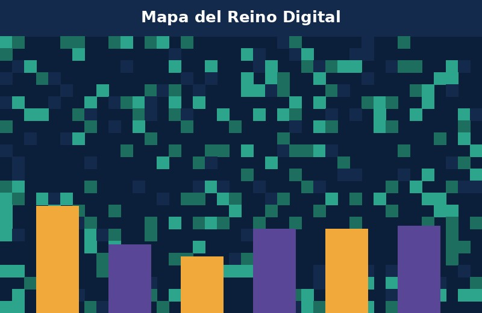
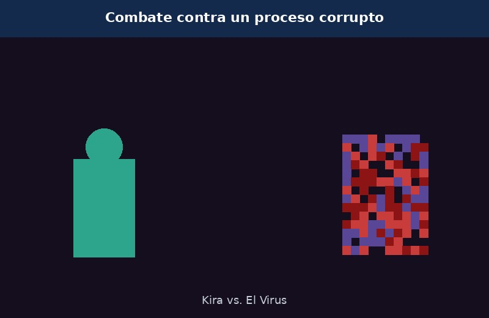

Capturas de pantalla


Requisitos del sistema
| Requisito | Mínimos | Recomendados |
|---|---|---|
| Sistema operativo | Windows 10 / Linux | Windows 11 / Linux |
| RAM | 4 GB | 8 GB |
| GPU | Integrada | Dedicada, 2 GB |
| Espacio en disco | 2 GB | 4 GB (SSD) |
| Datos orientativos sujetos a cambios antes del lanzamiento. | ||
Instalación desde la terminal
Para la versión de desarrolladores, clona el repositorio e instala las dependencias:
git clone https://github.com/bytequest/juego.git
cd juego
npm installPara comentar una línea de HTML recuerda usar <!-- comentario -->.
Byte Quest instalado correctamente. Escribe "npm start" para jugar.